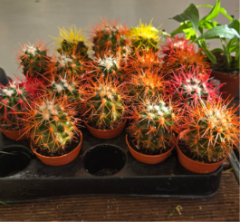

Start Simple
Choosing your first plant can feel overwhelming when you're not sure what to look for.
Some plants need lots of attention, while others are more forgiving if you forget to water them. Learning what a plant needs before buying one can help you find a plant that fits your home and your lifestyle.

Explore Beginner Houseplants